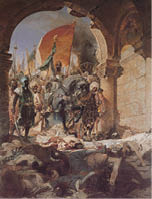

Osmanlı’nın Osmancık’larda Olmayan Tarih Bilinci ve Sanat Saygısı
Muzaffer Osmanlı orduları, 29 Mayıs 1453 günü, Konstantinopolis’e girdiler.
Henüz 21 yaşında olan Fatih Sultan Mehmet, bir çağ kapatıp bir çağ açtığının ve Hıristiyanlık âleminin ilk, Roma İmparatorluğu’nun sonuncu başkenti, dünyanın en narin coğrafyasında kurulmuş en yüksek uygarlığın payitahtını fethettiğinin bilincindeydi. Üstelik, böyle bir fethin değerini bilecek kalibrede, çok bilgili ve aydın bir kişilikti. Dolayısıyla, 1204 Latin talanından sonra gelen imparatorların az çok eski gösterişini kazandırmaya çalıştıkları Konstantinopolis’in mimari eserlerine ve paha biçilmez sanat yapıtlarına zarar gelmesini hiç istemiyordu.

Fatih’in Konstantinopolis’e girişi/Ressam: Benjamin-Constant, 1876
Geleneğe uyarak, ordusuna zafer sonrası 3 gün süreyle başkenti yağmalama izni vermişti. Ama sanatsever vicdanı, üç güne bile dayanamadı. Yağma iznini birinci günün sonunda kaldırdı. Asker de itiraz etmedi. Osmanlı’nın, Konstantinopolis’i bir gün süren yağması, 1204’te Latinlerin yaptığı talan ve başkente verdiği zararın yanında devede kulak bile değildir. Ama Batılı kaynaklar, bu yağmaya ilişkin çoğu uyduruk sahneleri, ileride Türklere “barbar” denilmesini kolaylaştırmak amacıyla, abartmıştır da abartmıştır.
Oysa Fatih, Roma’nın eski başkentini hiçbir Hıristiyan işgalcinin göstermediği bir titizlikle korumuş, ayakta kalan tüm binaları onartmıştır. Hatta camiye çevirtmekle yetindiği kiliselerdeki İslam’a aykırı mozaiklere, fresklere bile dokundurmamış, üstlerinin kâh mermer tabaka, kâh eserin orijinaline zarar vermeyecek sıvayla kapatılmasını sağlamıştır.
Fantastik kurgusuna karşın tümüyle tarihsel gerçeklere dayanarak yazdığım Destina başlıklı romanımda, Fatih Sultan Mehmet’in İstanbul’a girişini şöyle anlatırım:
“Beyaz atının üstünde Ayasofya’ya doğru yola çıktığında, öğleden sonraydı.
Üstünde altın ve gümüş işlemeli kaftanı, rahvan sürdüğü safkan Arap atına attırdığı her adımda, büyük tarihe bıraktığı nal izinin tadını çıkarır gibi ağır ilerliyordu.
Arkasından saray erkânı, vezirler ve ulema geliyordu.
Atından, tapınağın içine girince indi ve Konstantinopolis’te ayağını ilk kez, Ayasofya’nın kutsal zeminine bastı.
Sunağa yaklaşınca bağırdı:
“Allahüekber!”
Dünyada eşsiz kubbenin, altında toplananlara katlayarak geri gönderdiği bu haşmetli olduğunca ürkünç nara üzerine, şeyhülislam tekbir verdi ve hep birlikte namaza duruldu.
Megalo Ecclesia cami olmuştu.
Konstantin Augusto,40 yapımını emrettiğinde yıl 325 idi. İnşası 5 yıl, 10 ay, 10 gün sürmüştü ve... bir Apollon Tapınağı’nın üstüne kurulmuştu.
Devran dönüyordu.
Fatih Sultan Mehmet’in Ayasofya’dan sonraki durağı, yine Konstantin Augusto’nun 1100 yıl önce yaptırdığı emperyal saray oldu.
Osmanlı’nın genç sultanı, sarayın viran ve karanlık koridorlarında yürürken, bu kez bir dua değil, Şehname’den bir mısra okudu:
Örümcek Kisrâ’nın penceresinde perdedarlık yapıyor
Baykuş Efresiyab’ın41 kalesinde nöbet bekliyor.”
Bugün, İstanbul’un şanlı Roma tarihinden kalan ne varsa, Fatih ve onun gibi, dinine aykırı sanat eserlerini bile yok etmeyip, gizleyip korumakla yetinen Osmanlı sultanlarına borçluyuz.
Eğer Fatih Sultan Mehmet olmasaydı, örneğin Kariye Cami’nin içerdiği muhteşem mozaikler kalmazdı günümüze. Keza, Ayasoyfa’nın dünya mirası mozaikleri, fresklerinden mahrum kalırdık. Zaten Ayasofya’nın bina olarak kütlesi de başta Mimar Sinan, Osmanlı saray mimarlarının sürekli bakımı, destek ve güçlendirme çalışmaları sayesinde ayakta kalmıştır.
Günümüz Türkiyesi’nde, özelinde Batı basını, genelinde yandaşları tarafından Neo Osmanlı diye anılmaktan pek hoşlanan ve Osmanlı tarihine sahip çıkmakla övünen muktedirler, İstanbul’un tarihini 1453’te başlatıyor ve zaten öncesini bilmedikleri gibi, bilmediklerini de öğretemiyorlar.
Oysa Osmanlı Hanedanı, saray erkânı ve aydınları, imparatorluğun başından sonuna, bugünkü muktedirlerin hiç mi hiç farkında olmadıkları kadim bir gerçeği asla unutmadılar:
Konstantinopolis, tam 1123 yıl boyunca Roma İmparatorluğu’nun başkentiydi.
İstanbul’un Osmanlı’dan Türkiye Cumhuriyeti’ne, bize aidiyeti ise henüz 600 yıl bile değil...
Oysa kendisinden önceki tarihin mirasına sahip çıkmayanların tarihe bırakacağı mirasa da gelecek sahip çıkmaz. Bu böyle biline!